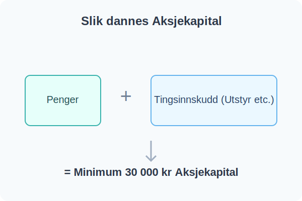

Aksjekapital er den samlede verdien av eiernes innskudd i et aksjeselskap (AS) ved oppstart. Som en spesifikk form for finanskapital, fungerer denne kapitalen som selskapets grunnleggende egenfinansiering og utgjør en viktig del av selskapets egenkapital. Aksjekapitalen inngår som en sentral del av passiva i balansen og må spesifiseres i selskapets vedtekter.
Krav til Aksjekapital
For å stifte et aksjeselskap i Norge, er det et lovpålagt krav i aksjeloven om å ha en aksjekapital på minimum 30 000 kroner. Denne kapitalen trenger ikke utelukkende være kontanter. Den kan bestå av:
- Penger: Kontantinnskudd på en egen bedriftskonto.
- Tingsinnskudd (naturalinnskudd): Verdier som maskiner, utstyr, eiendom eller andre eiendeler som er relevante for driften.
En kombinasjon av penger og tingsinnskudd er også vanlig. Verdien av tingsinnskudd må bekreftes av en revisor.

Aksjekapitalens Rolle
Aksjekapitalen er knyttet til selskapets aksjer. Den totale aksjekapitalen fordeles på et antall aksjer, som hver får en pålydende.
Aksjonærenes eierskap og antall aksjer de eier, dokumenteres i et aksjebevis.
Pålydende verdi per aksje = Total aksjekapital / Antall aksjer
Det er viktig å merke seg at selv om aksjer har samme pålydende, kan de ha ulike rettigheter hvis selskapet har opprettet forskjellige aksjeklasser.
Denne kapitalen skal brukes til å finansiere driften, enten det er investeringer i utstyr, varekjøp eller dekning av løpende kostnader, før selskapet selv begynner å generere inntekter.
Hvis selskapet senere trenger mer kapital, kan aksjonærene:
- Øke aksjekapitalen gjennom en kapitalforhøyelse (som er en form for egenfinansiering) eller gjennom en emisjon. Les mer i Emisjon.
- Redusere aksjekapitalen gjennom en kapitalnedsettelse for å returnere kapital til aksjonærene eller dekke underskudd.
- Låne penger til selskapet uten å utvanne eierandelene.
- Vurdere moderne finansieringsmetoder som crowdfunding og andre former for crowdsourcing for å hente kapital fra mange små investorer. Styret har det overordnede ansvaret for å godkjenne kapitalforhøyelser og sikre forsvarlig egenkapital. Aksjonærer kan koordinere sin stemmegivning og beslutningstagning omkring kapitalspørsmål gjennom en aksjonæravtale for å sikre enhetlige vurderinger av finansieringsalternativer. Selskapet kan også gjennomføre en aksjespleis for å øke aksjekursen, eller en aksjesplitt for å senke den, selv om ingen av disse endrer den totale aksjekapitalen.
Risiko for Aksjonærene
Som eier (aksjonær) er din økonomiske risiko i et aksjeselskap i hovedsak begrenset til aksjekapitalen du har skutt inn. Hvis selskapet skulle gå konkurs, kan du normalt ikke tape mer enn ditt aksjeinnskudd. Dette er en av de store fordelene med selskapsformen AS.
I motsetning til risikoen, er potensiell avkastning på aksjekapitalen ikke begrenset - aksjonærer kan tjene betydelig mer enn sitt opprinnelige innskudd gjennom utbytte og verdistigning av aksjene. Aksjekapitalen danner grunnlag for skjermingsfradrag i aksjonærmodellen ved utbyttebeskatning.
For detaljert informasjon om hvordan aksjekapital påvirker skatt på utbytte og gevinst, se vår Aksjonærmodellen - Komplett Guide til Norsk Aksjebeskatning.
I regnskapet føres aksjekapitalen på passivasiden i balansen, under “Egenkapital”.